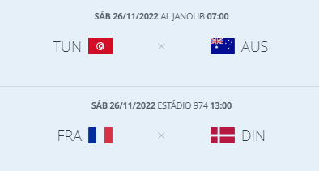

A Escolha
O Qatar decidiu apresentar sua candidatura para a copa do mundo 2022 em 2009. Com 1,6 milhões de habitantes, uma cultura rica e um país de temperatura, o Qatar
quis ser o primeiro país do oriente médio a sediar o grandioso evento esportivo que acontece a cada 4 anos.
Os responsáveis pela candidatura, afirmaram que estariam investido na melhor estrutura tecnológica o possível, para que este problema climático não interferisse no desempenho
dos jogadores, o mesmo servindo também para os seus visitantes.
O processo para a escolha dos países que sediariam as copas de 2018 a 2022 teve inicio em janeiro de 2009 e os países interessados deveriam apresentar todas os documentos
necessários para a sua candidatura. Os países que disputavam com o Qatar na época eram:
- Estados Unidos
- México
- Japão
- Coréia do Sul
- Austrália
- Indonésia
- Estados Unidos
- México
- Japão
- Coréia do Sul
- Austrália
- Indonésia
O Mexico optou por desistir da candidatura antes que houvesse os sorteios e a FIFA não havia aceitado a candidatura oficial da Indonésia, por não apresentarem os documentos necessários e a carta de apoio do governo responsável da época.
O que você precisa saber?
Com sua origem em 1930 no Uruguai e realizada a cada 4 anos, a Copa do mundo se tornou o maior evento do planeta, reunindo os amantes pelo futebol
e várias nações de diferentes culturas pelo mundo.
A copa será realizada do dia 22 novembro a 18 de dezembro de 2022. O campeonato contará com 32 países participantes e
será a útima copa com o formato atual. A partir de 2026, a FIFA estipulou que serão 48 times a disputar o maior campeonato de futebol do mundo.
Ela passará por 8 estádios diferentes dentro de 5 cidades, iniciando por Doha, que receberá os jogos em dois estádios:
- Estádio AL THUAMMA
- Estádio Ras Bu Abboud
Já aos arredores de Doha, serão realizados os outros jogos nos demais estádios:
- Estádio internacional KHALIFA
- Estádio da Cidade da Educação
- Estádio AHMED BIN ALI
- Estádio Al BAYT
- Estádio Nacional Lusail
- Estádio Al Janoub
Como de costume também, as disputas irão funcionar como as anteriores: 32 países dividios em 8 grupos de 4, onde 2 dos melhores passam para as oitavas-de-final, indo para o mata-a-mata.
O Mexico optou por desistir da candidatura antes que houvesse os sorteios e a FIFA não havia aceitado a candidatura oficial da Indonésia, por não apresentarem os documentos necessários e a carta de apoio do governo responsável da época.
Horários
Primeira fase será dividida em quatro horários diferentes:
Já a fase final serão nos horários de:
E o último jogo será ao 12h00 (meio-dia). Todos os horarios de acordo com o horário de Brasília.
Grupo B
Inglaterra
A Inglaterra é uma das duas mais antigas seleções nacionais de futebol do mundo tendo como casa o Wembley Stadium em Londres.
Já participou de 15 copas e venceu em casa a Copa do Mundo de 1966 quando derrotou na final a Alemanha Ocidental
por 4–2 na prorrogação. A Inglaterra tem como técnico Gareth Southgate e vem produzindo grandes talentos para todas as partes do
time há algum tempo – e com uma boa regularidade. Com Bellingham, Sancho, Saka, Foden, Rice, James e Mount, há toda uma gama de
jogadores de classe mundial na equipe que terão, no máximo, 23 anos no torneio. O jogo de estreia será no estádio Internacional Khalifa no dia 21/11/2022, às 10h - contra o Irã.
Irã
A seleção do Irã é liderada pela Federação de Futebol da República Islâmica do Irã e
é um dos principais selecionados do esporte na Ásia. Foi fundada em 1920 e, desde 1945,
é membro da Fifa. Participou de 5 copas e em 2005 é ranqueado entre os Top 20 do Ranking Mundial da FIFA
com seu ápice na 13ª colocação. Quando se trata de talento, as coisas estão paradas para o Irã. A seleção está sob
liderança de Carlos Queiroz e estará no comado de jogadores bem jovens como Sayyadmanesh de 21 anos, o meio-campista
Salmani que completará 20 anos de idade. O jogo de estreia será no estádio Internacional Khalifa no dia 21/11/2022, às 10h - contra a Inglaterra.
Estados Unidos
A seleção norte-americana já participou de onze Copas do Mundo da FIFA,
incluindo a primeira em 1930, onde chegou às semifinais. Eles retornaram em 1934 e 1950,
derrotando a Inglaterra por 1-0 neste último, mas não se classificaram novamente até 1990.
Como anfitrião em 1994, os EUA receberam vaga automática e perderam para o Brasil nas oitavas de final.
Teve 10 participações e tem como principais jogadores Christian Pulisic, Cobi Jones e como técnico Gregg Berhalter. O jogo de estreia será no estádio Ahmad Bin Ali no dia 21/11/2022, às 16h - contra o País de Gales.
País de Gales
A Seleção Galesa de Futebol representa o País de Gales nas competições de futebol da FIFA.
Esta seleção só esteve 3 vezes em competições oficiais 1 Eurocopa e 2 participações na Copa do Mundo onde em 1958
chegou aos quartas-de-final. Robert Page assume a liderança da seleção e conta com jogadores de peso como Chris Gunter,
Gareth Bale e Ben Davies. O jogo de estreia será no estádio Ahmad Bin Ali no dia 21/11/2022, às 16h - contra os Estados Unidos.
Grupo C
México
O México disputou 14 copas do mundo com seu melhor resultado um 6° lugar nas copas de 1970 e 1986.
Seu técnico Gerardo Martine tentará levar a seleção a gloria na copa com seus principais jogadores: Hector Moreno, Hector Herrera, Guilhermo Ochoa e Raul Jimenez.
O país fará sua estreia no dia 22/11/2022 ás 13h00 contra a Polônia, no estádio Ras Bu Abboud.
Argentina
Já participou de 18 copas, tendo apenas duas vitórias em toda sua trajetória no campeonato.
Com seu técnico Lionel Scaloni, a seleção contará com a sua maior estrela atual, Lionel Messi e também com os jogadores Ángel Di Maria e Paulo Dybala.
O país fará sua estreia no dia 22/11/2022 ás 07h00 contra a Arábia Saudita, no estádio Lusail.
Polônia
Participou de 8 copas do mundo, mas nunca obteve uma vitória. Com teu técnico Czeslaw Michniewicz, a seleção contará com nomes importantes como Karol Swiderski, Piotr Zielinski, Jan Bednarek.
Fará sua estreia no dia 22/11/2022, ás 13h00 contra o México no estádio Ras Bu Abboud.
Arábia Saudita
A seleção saudita participará de sua sexta edição da Copa do Mundo de Futebol em 2022.
Com seu técnico Hervé Renard, a seleção terá como principais jogadores: Abdulelah Al-Amri, Salem Al-Dawsari, Yasser Al-Shahrani Shahrani. A seleção fará sua estreia dia 22/11/2011 ás 07h00 no estádio Lusail.
Grupo D
Tunísia
Participou de 5 copas do mundo, mas náo ganharam em nenhuma das edições que participou. O técnico Jalel Kadri, estará a frente da seleção este anos e estará
contando com seus jogadores Ali Abdi, Aissa Laïdouni, Issam Jebali. A seleção fará sua estreia contra a Dinamarca ás 10h00, no Estádio
da cidade da Educação.
Austrália
Participou de 5 copas, mas não ganharam nenhuma das edições que participaram. Seu técnico Graham Arnold, trará nomes fortes como: Riley McGree, Denis Genreau e Mathew Leckie.
A seleção fará sua estreia no dia 22/11/2022 as 16h00 contra a França, no estádio Al Janoub.
Dinamarca
Participou de 5 copas do mundo, mas não ganhou nenhuma vez. Seu técnico é Kasper Hjulmand e ele estará trazendo nomes importamtes como: Kasper Schmeichel,
Andreas Christensen E Christian Eriksen.
Fará sua estréia dia 22/11/2022 ás 10h00 contra a Tunísia, no estádio Cidade da Educação.
França
Participou de 16 copas do mundo e conquistou a taça duas vezes. Seu técnico é o veterano Didier Deschamps e a seleção contará com um dos seus melhores elencos da história, com nomes como:
Kylian Mbappé, Antoine Griezmann e Oliver Giroud.
A seleção fará sua estreia dia 22/11/2022 as 16h00 contra a Austrália, no estádio Al Janoub.
Grupo E
Espanha
Participou de 15 copas do Mundo. Foi campeã em 2010. Seu técnico é Luis Enrique. Seus principais jogadores são:
o experiente volante Sergio Busquets, e a incrível nova geração espanhola encabeçada por Marco Asensio, Ferran Torres e Ansu Fati.
A espanha faz sua estréia no dia 23/11/2022 no estádio AL THUMAMA às 13h00 contra a seleção da Costa Rica, seus próximos jogos são no dia 27/11/2022 no estádio AL BAYT
contra a Alemanha às 16h00, Contra o Japão no dia 01/12/2022 às 16h00 no estádio INTERNACIONAL KHALIFA.
Alemanha
Participou de 19 copas do mundo. Tem 4 títulos de copa, 4 vice campeonatos e 4 terceiros lugares.
Seu técnico é Hans-Dieter Flick. A lista de talentos da seleção alemã é extensa, mas seus principais nomes são:
Timo Werner, Leroy Sané, Thomas Muller, Manuel Neuer, Joshua Kimmich e Kai Havertz.
A Alemanha faz sua estréia no dia 23/11/2022 contra a seleção japonesa no estádio INTERNACIONAL KHALIFA às 10h00, depois disso, enfrenta a seleção espanhola no dia 27/11/2022 às 16h00 no estádio AL BAYT e no dia 01/12/2022 enfrenta
a seleção costa riquenha às 16h00 também no estádio AL BAYT.
Costa Rica
Participou de 6 copas do mundo e não possui nenhum titulo, mas, durante sua trajetória em todas as partidas fez campanhas memoráveis.
Com o técnico Luis Fernando Suárez a frente do time, a seleção contará com seus principais jogadores:
Keylor Navas, Oscar Duarte, Celso Borges, Randal Leall e Joel Campbell como alguns de seus principais jogadores.
Costa Rica fará sua estréia no dia 23/11/2022, ás 13h00 contra a Espanha no estádio THUAMMA. Depois enfrentará o Japão no dia 27/11/2022, ás 7h00, e por fim,
jogorá contra a Alemanha no dia 1/12/2022 ás 16h00. Todas as partidas serão no mesmo estádio.
Japão
Já participou de 6 copas do mundo. A seleção japonesa nunca passou das oitavas-de-final.
Seu técnico é Hajime Moriyasu. Seu principal nome é Takefusa Kubo, muitas vezes chamada pela imprensa esportiva de "Messi japonês"
por seu talento que é acima da média.
A seleção japonesa faz sua estréia no dia 23/11/2011 contra a seleção alemã ás 10h00 no estádio INTERNACIONAL KHALIFA, depois, enfrenta a Costa Rica
no dia 27/11/2022 no estádio AHMAD BIN ALI ás 7h00.
Seu último jogo do grupo é contra a Espanha no dia 01/12/2022 também no estádio INTERNACIONAL KHALIFA, ás 16h00.
Estádios
Al Bayt
Com capacidade para 60.000 telespectadores, está localizado na cidade de Al Khor, famosa pelo mergulho de pesca de pérolas, o estádio é uma réplica do Bayt al sha'ar, que são as tendas usadas historicamente pelos povos nômades do Qatar.

Lusail
Localizado 15 km ao norte do centro da cidade de Doha este será o estádio que receberá a final da Copa do Mundo. Além disso, é o maior deste Mundial, com espaço para 80 mil torcedores.
Ahmad Bin Ali
Com capacidade para 40.000 pessoas, está localizado à beira do deserto em Al Rayyan, ele usa símbolos culturais do Qatar para criar um estádio que reflete o deserto e a beleza cultural que o rodeia. O Ahmad Bin Ali, aliás, foi construído para a Copa e substituiu o estádio original que lá se encontrava.
Khalifa International
Este é o principal estádio do país desde 1976. Nele, foram adicionados dois novos arcos duplos - que representam a continuidade e o abraço dos torcedores - para a Copa do Mundo. Possui capacidade para 40 mil lugares.
Al Janoub
Localizada no sul da cidade de Al Wakrah, este estádio foi projetado como homenagem aos dhow, que são os barcos de pesca de pérolas - um dos símbolos mais icônicos da região do Qatar. Possui capacidade para 40 mil pessoas.
Al Thumama
Localizado em Doha, este estádio é inspirado no tradicional gahfiya, uma touca trançada que constitui uma parte importante do traje tradicional da região. Possui capacidade para 40 mil pessoas.
Education City
Este é um estádio que está no centro na inovação. Isso porque desde o sistema de refrigeração único até os espaços verdes ao seu redor, o Education City foi construído para pensar na sustentabilidade e no futuro. Possui capacidade para 40 mil pessoas.
974
Este é um estádio temporário construído ao longo das margens do Golfo. Ele foi construído a partir de contêineres e usa menos material de construção do que os estádios tradicionais. Possui capacidade para 40 mil lugares.
Tabela de Jogos
| Grupo B | Grupo C | Grupo D | Grupo E |
|---|---|---|---|
 |
 |  |
|